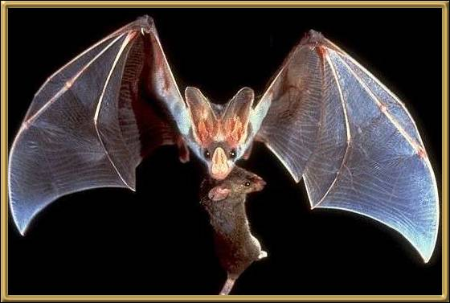
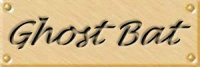

These bats get their name from their very silent flight and their pale, ghostly appearance. They hang from trees and rock ledges, and fly out to catch prey in the air or on the ground. They tend to roost in caves, in groups of ten or more.
Picture: G B Baker